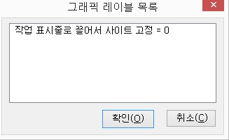

현재 활성화된 윈도우의 그래픽들을 자동으로 레이블 합니다.
이 기능에서 말하는 그래픽은 도구 아이콘이나 버튼들을 의미하며, 인터넷의 이미지와는 다른 것입니다.
자동으로 설정되지 못하는 그래픽이나 자동으로 처리하였을 때 엉뚱한 레이블이 지정되는 경우 수동으로 그래픽 레이블을 붙입니다. 수동 그래픽 레이블을 붙이기 위해서는 '그래픽 전체 읽기'로 그래픽 읽기 방법이 지정되어 있어야 합니다.
수동 그래픽 레이블 설정 방법
① <Insert-G>키를 눌러 그래픽 읽기 방법을 '그래픽 전체 읽기'로 바꿉니다.
② 읽기포인터를 이용하여 원하는 그래픽에 위치시킵니다.
③ '수동 그래픽 레이블 설정' 기능을 실행합니다.
읽기포인터가 그래픽에 맞추어져 있지 않다면 "그래픽이 아닙니다"라는 음성 메세지를 출력합니다.
④ 편집창에 레이블을 입력합니다.
⑤ '확인' 버튼을 클릭합니다.
* 도구 아이콘이나 버튼들은 대개 이미지 형태로 만들어져 있어 시각장애인들이 그래픽의 기능을 확인하기가 어렵습니다. 이런 경우, 보는 사람들과 함께 도움을 받으며 레이블 작업을 해야 하는데, <Insert-키패드 ->키를 눌러 마우스 포인터로 포인터를 변경한 다음 작업을 진행하면 읽기포인터의 위치와 실제 마우스의 위치가 일치하기 때문에 보는 사람들이 읽기포인터의 위치를 확인하기 쉬워집니다.
현재 지정된 그래픽 레이블의 목록을 출력합니다.
출력 형태는 레이블 설명, 그래픽 번호 순이며, 레이블 목록에서는 레이블의 변경과 삭제 작업이 가능합니다.

그래픽 레이블의 변경
① 그래픽 레이블 목록 기능을 실행합니다.
② 변경하고자 하는 그래픽 레이블 목록을 선택합니다.
③ <Popup>키를 눌러 [변경] 메뉴 항목을 선택합니다.
④ 변경하고자 하는 레이블명을 적은 후에 '확인' 버튼을 누릅니다.
⑤ 그래픽 레이블 목록으로 다시 돌아오면 '확인' 버튼을 눌러 창을 닫습니다.
그래픽 레이블의 삭제
① 그래픽 레이블 목록 기능을 실행합니다.
② 삭제하고자 하는 그래픽 레이블의 목록을 선택합니다.
③ <Del>키를 누르거나 <Popup>키를 눌러 [삭제] 항목을 선택하여 삭제합니다.
④ 그래픽 래이블 목록 대화상자가 나타나면 '확인' 버튼을 클릭합니다.
그래픽 읽기 방법은 '그래픽 전체 읽기', '레이블된 그래픽 읽기', '그래픽 읽지 않기'의 세 가지 설정이 있습니다.
기능키를 한 번씩 누를 때마다 설정값이 변경됩니다.
1. 그래픽 전체 읽기
레이블된 그래픽 뿐 아니라 모든 그래픽을 읽습니다. 레이블이 되지 않은 그래픽의 경우 구분을 위해서 '그래픽' 문자열 다음에 해당 그래픽의 고유번호를 붙입니다. (예: '그래픽 125')
2. 레이블된 그래픽 읽기
자동 그래픽 레이블 기능이나 사용자가 수동으로 레이블을 붙인 그래픽만 읽어줍니다.
3. 그래픽 읽지 않기
모든 그래픽과 레이블된 그래픽, 심볼 그래픽들 모두를 읽지 않습니다.
심볼 그래픽은 콤보상자 등에서 표시되는 '아래화살표'과 같은 그래픽을 의미합니다.